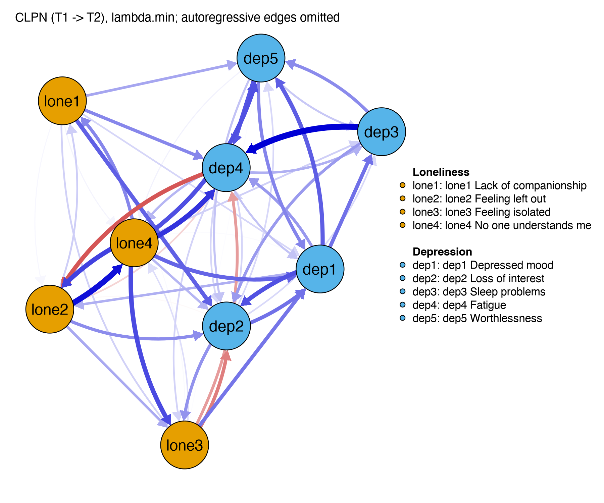
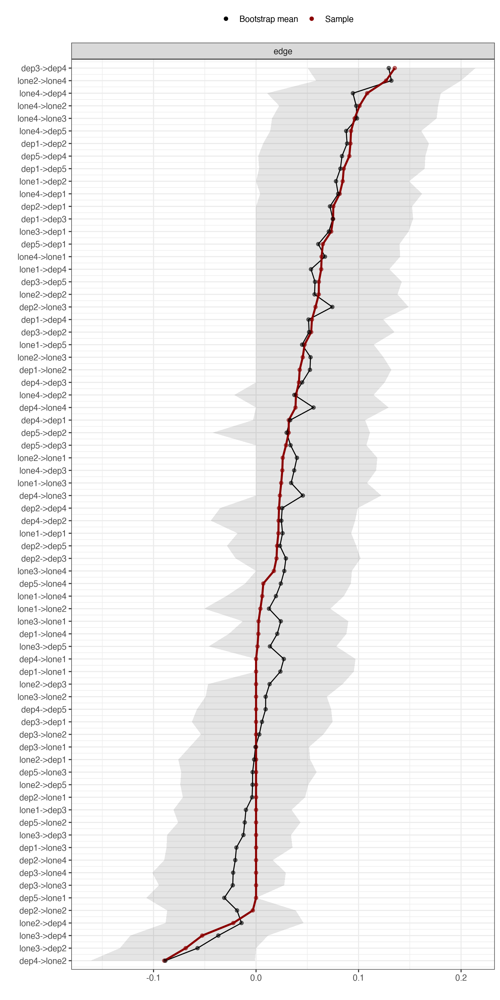

Final Exam
Take this after Lesson 10.3; about 90 minutes. Part A has 25 auto-graded questions; Part B has 4 interpretation questions (write your answer first, then score it point by point against the reference answer and rubric; you may revise and score again); Part C has 5 questions you work out in R.
Before you start
- Parts A and C are scored on first-try answers: only your first answer to each question counts. The "(y correct on first try)" count at the top of the page is your score. Each Part A question is worth 2 points (50 in total) and each Part C question 2 points (10 in total).
- Each Part B question is worth 10 points, scored on four dimensions: conclusion 4 · numbers and intervals 3 · direction 2 · no over-interpretation 1. Finish writing before you open the reference answer.
- Part A can be done closed-book; for Part B you may open the course's figures and tables; Part C needs RStudio and the course data
data/clpn_sim_wide.csv. - Eight Part A questions test the same points as the pre-test (with different numbers and settings). When you finish, compare your score with the pre-test score in your study log to see how far you have come.
Part A: Auto-graded questions (25)
Covers M1–M9. The 8 questions marked [Parallel] test the same points as the pre-test.
[Parallel] A domestic violence helpline received 50 calls in one week, 18 of them from older adults. What percentage of the calls came from older adults? (Enter a number only)
[Parallel] Last week four social workers made 3, 5, 6 and 10 home visits. How many home visits did each make on average?
[Parallel] The loneliness scale in the course data has 4 items, each scored 1–4. What is the lowest possible total of the 4 items?
[Parallel] Among the monthly incomes of 7 households in a community, one belongs to a business owner with a very high income. Which number better describes "the income of a typical household in this community"?
- The mean is pulled up by that one extreme household.
- Correct.
- The maximum only describes that one household.
- The variance describes spread, not the "typical level."
[Parallel] A survey finds that adolescents who exercise more times a week have lower depression scores. Which statement is the most cautious?
- This is a causal conclusion.
- This applies a group trend to every individual.
- Correct.
- The question says they are associated.
[Parallel] Suppose you really did survey every social worker in the province and found an average of 6.2 years in the job. What is this 6.2 called in statistics?
- Correct.
- A statistic is calculated from a sample; here the whole population was surveyed.
- No.
- No.
[Parallel] What is the statistical method called that predicts an outcome from one or more predictors (as in "linear ____")? (One word)
[Parallel] You run read.csv("data/clpn_sim_wide.csv") in RStudio and get the error "cannot open file … No such file or directory." What is the most likely cause, and the best fix?
- It has nothing to do with viruses.
- Correct.
- Check the path first.
- It works, but it is not reproducible; use a Project and relative paths.
Someone scores 35 on a scale with mean 50 and standard deviation 10. What is their z-score?
A study reports a 95% confidence interval of [2.10, 2.30] for mean loneliness. Which interpretation is correct?
- A confidence interval describes uncertainty about the mean, not the range of individual scores.
- Correct.
- No.
- The sample mean sits in the middle of the interval.
A test gives p = .03. Which statement is correct?
- This is the most common misreading.
- Correct.
- No.
- A p-value is not an effect size.
A survey with N = 20000 finds that men's and women's mean loneliness differ by 0.02 points (on a 4-point scale), p < .001. What is the most appropriate conclusion?
- With a very large sample, even tiny differences become significant.
- Correct.
- This is common with large samples.
- No.
Regression model: depression = 0.5 + 0.30 × loneliness + 0.10 × age. How should the loneliness coefficient 0.30 be interpreted?
- Correct.
- It is neither causal nor a percentage.
- That is the kind of thing you say about R².
- A partial regression coefficient is not a correlation.
A logistic regression of "whether someone seeks professional help" gives an odds ratio of OR = 1.5 for social support. What is the most appropriate interpretation?
- An OR is not a probability.
- Correct.
- No.
- OR > 1 means a positive relationship.
What is the purpose of choosing LASSO's λ with k-fold cross-validation?
- That leads to overfitting.
- Correct.
- Irrelevant.
- No.
For the vector x <- c(2, NA, 4), what does mean(x) return?
- By default, missing values are not skipped.
- Correct. To get 3, write
mean(x, na.rm = TRUE). - No.
- There is no error; it returns NA.
na.rm = TRUE, see 2.2.A dataset with 300 people and 4 waves is converted from wide format (one row per person) to long format (one row per person per wave). How many rows are there?
In a panel study, whether participants drop out at Wave 2 depends on how depressed they actually were at Wave 2 (the more depressed, the less willing to respond), even after controlling for the Wave 1 information. What kind of missingness is this?
- It is not completely random.
- Under MAR, missingness depends only on observed variables.
- Correct. Missingness depends on the unobserved values themselves; FIML and multiple imputation cannot fully solve this, so a sensitivity analysis is needed.
- There are missing data.
What is the core criticism of the traditional CLPM by Hamaker et al. (2015)?
- No.
- Correct.
- A CLPM does estimate autoregression.
- That is not the core criticism.
From which matrix can the partial correlations of a GGM be computed directly?
- You first need the covariance matrix.
- Correct.
- No.
- No.
When you study the "comorbidity" of loneliness and depression, which edges does bridge expected influence (bridge EI) count?
- That is ordinary EI.
- Correct.
- Exactly the opposite.
- No.
A CLPN weights matrix is stored as B[k, j] = "k at T1 → j at T2." B["dep4", "lone2"] is negative. What does this mean?
- The direction is read backwards.
- Correct. A negative edge is a predictive relationship in the opposite direction.
- The coefficient is not 0.
- It is not causal.
You estimate separate CLPNs for T1→T2 and T2→T3 and find that the edges of the two networks correlate at .64. What does this mainly tell you?
- .64 means similar, but not identical.
- Correct.
- No.
- Not necessarily.
A study reports a CS-coefficient of 0.36 for in-EI. By the usual standards, how should the in-EI ranking be treated?
- It should preferably be above 0.5.
- Correct.
- Report it honestly; only the interpretation needs to be cautious.
- The CS-coefficient describes exactly how stable the ranking is.
Which sentence does not over-interpret?
- Causal.
- Applies a group result to individuals.
- Correct.
- Observational data cannot support an intervention conclusion.
Part B: Interpretation questions (4)
Each question gives real output from the course scripts (the course site reads the numbers from R/output/ automatically). Write a paragraph in answer, then open the reference answer and score yourself on the four dimensions.
Question 1
B1 (Reading edges) In the T1 → T2 CLPN of the course data (R/L7-2.R, lambda.min, 52 nonzero cross-lagged edges in total), the loneliness → depression edge with the largest absolute value is B["lone4", "dep4"] = 0.108 (No one understands me → Fatigue), and the depression → loneliness edge with the largest absolute value is B["dep4", "lone2"] = −0.089 (Fatigue → Feeling left out). In 3–4 sentences, write an interpretation of these two edges for a paper.

Figure: R/output/L7-3_clpn.png

Reference answer & rubric
Example: "Controlling for all 9 items at T1, participants who scored higher on 'No one understands me' at T1 tended to score higher on 'Fatigue' at T2 (B = 0.108); this is the strongest edge in the loneliness → depression direction. In the opposite direction, participants who scored higher on 'Fatigue' at T1 tended to score slightly lower on 'Feeling left out' at T2 (B = −0.089), a negative edge. Both are small predictive relationships over time; they cannot be interpreted as causal effects, nor do they represent a change process within each individual. Their stability has to be judged together with the bootstrap results (Lesson 8.2)."
| Dimension | Points | Points to look for |
|---|---|---|
| Correct conclusion | 4 | Gets the meaning and the sign of both edges right |
| Cites the correct numbers and intervals | 3 | Gives both B values |
| Reads the direction and B[k, j] correctly | 2 | Reads both edges as row node at T1 → column node at T2 |
| No causal or individual-level over-interpretation | 1 | No wording such as "causes" or "everyone will" |
Question 2
B2 (Edge accuracy) Results of the 1000 bootstrap samples in R/L8-2.R: lone4 → dep4 has an estimate of 0.108, a bootstrap interval of [0.011, 0.180], and is 0 in a proportion 0.018 of the resamples; lone3 → dep1 has an estimate of 0.073, an interval of [0.000, 0.149], and is 0 in a proportion 0.027 of the resamples. In addition, the difference tests comparing the 10 strongest cross-lagged edges pair by pair were all non-significant (every interval includes 0). The course data are simulated, so the population targets of both edges are known: lone4 → dep4 = 0.005, lone3 → dep1 = 0.118. Write 3–5 sentences: From the bootstrap alone, can you tell which edge is more reliable? Can you say that "lone4 → dep4 is stronger than all the other strong edges"? Compared with the population targets, what does the bootstrap tell you, and what does it not tell you?

Figure: R/output/L8-2_edge_ci.png

Reference answer & rubric
Example: "The two edges are about equally stable under resampling: the proportions of resamples in which they were shrunk to 0 are 0.018 and 0.027, and their lower interval limits are 0.011 and 0.000, both close to 0. From the bootstrap alone, you cannot tell which is more reliable. The difference tests between the strongest edges were all non-significant (every interval includes 0), so you also cannot say that lone4 → dep4 is 'stronger' than the other strong edges. Compared with the population targets, the picture is actually reversed: lone4 → dep4 is almost 0 in the population (0.005), while lone3 → dep1 is the strongest loneliness → depression edge in the population target (0.118). The bootstrap only reflects sampling variation around the estimate from this sample; it cannot show whether an edge exists in the population. Because LASSO shrinks estimates toward 0, these intervals also cannot be treated as strict 95% confidence intervals."
| Dimension | Points | Points to look for |
|---|---|---|
| Correct conclusion | 4 | The two edges are about equally stable under the bootstrap and cannot be ranked; lone4 → dep4 cannot be called stronger than the other strong edges; being stable in the bootstrap does not mean an edge exists in the population |
| Cites the correct numbers and intervals | 3 | Cites both edges' proportions of zeros or intervals, the difference test result, and both population targets |
| Reads the direction and B[k, j] correctly | 2 | Gets the direction of both edges right |
| No causal or individual-level over-interpretation | 1 | Does not treat the intervals as strict confidence intervals; no causal claims |
Question 3
B3 (Centrality and stability) In R/L7-4.R, the node with the highest out-EI is lone4 (No one understands me, 0.61) and the node with the highest in-EI is dep4 (Fatigue, 0.40). The CS-coefficients from R/L8-3.R are: out-EI = 0.20, in-EI = 0.52. Write a paragraph (3–5 sentences) reporting the centrality results for a paper, including how to interpret the two rankings.

Figure: R/output/L8-3_casedrop.png
Reference answer & rubric
Example: "'Fatigue' had the highest in-EI (0.40), i.e. it was the item most easily predicted by the other items at T1; the stability of in-EI just reached an acceptable level (CS = 0.52), so its ranking can be interpreted with caution. 'No one understands me' had the highest out-EI (0.61), but the CS of out-EI was only 0.20, below 0.25, so the ranking is unstable, and this study does not interpret the out-EI ranking. High centrality only reflects predictive relationships over time; it does not establish a node as a 'core symptom' or the best intervention target."
| Dimension | Points | Points to look for |
|---|---|---|
| Correct conclusion | 4 | in-EI can be interpreted with caution; the out-EI ranking is not interpreted |
| Cites the correct numbers and intervals | 3 | Gives both nodes' values and both CS-coefficients, and compares them with 0.25 / 0.5 |
| Reads the direction and B[k, j] correctly | 2 | out-EI = predicting others, in-EI = being predicted by others, not reversed |
| No causal or individual-level over-interpretation | 1 | No "core symptom" or "intervening on it will ..." wording |
Question 4
B4 (Sensitivity analysis) In the capstone example (R/L10-2.R), the main analysis (lambda.min) has 52 nonzero cross-lagged edges. Sensitivity analyses: with lambda.1se only 17 remain, and their edges correlate with the main analysis at r = 0.67; with gender and age added as covariates, r = 0.997; re-estimated with the T2 → T3 data, there are 55 nonzero edges, correlating with the main analysis at r = 0.64. Write a 4–5 sentence paragraph reporting the sensitivity analysis results.
Reference answer & rubric
Example: "With gender and age added as covariates, the network hardly changed (edge correlation with the main analysis r = 0.997). With the more conservative lambda.1se, the number of nonzero cross-lagged edges fell from 52 to 17 (r = 0.67), showing that many weak edges depend on the λ rule and only the stronger edges are kept under both rules. Re-estimated with the T2 → T3 data, the edge correlation was r = 0.64: the overall structure replicates to some extent, but individual weak edges do not necessarily reappear. We therefore focus the interpretation on edges kept under both rules whose bootstrap intervals exclude 0; these sensitivity analyses cannot remove design limitations such as the mixing of between-person and within-person effects."
| Dimension | Points | Points to look for |
|---|---|---|
| Correct conclusion | 4 | Covariates make little difference; weak edges depend on the λ rule; the structure partly replicates |
| Cites the correct numbers and intervals | 3 | Gives the 3 r values and the edge counts |
| Reads the direction and B[k, j] correctly | 2 | Makes clear that the comparison is of cross-lagged edges (T1 → T2 / T2 → T3) and does not call T2 → T3 "another sample" |
| No causal or individual-level over-interpretation | 1 | Does not treat replication as evidence of causation |
Part C: Small R tasks (5)
Open clpn-course.Rproj in RStudio, run the two lines below, then do each question. Give answers to 3 decimal places (or as whole numbers); tolerance ±0.01.
source("R/_setup.R")
dat <- read_course_data()C1: What is the mean of lone1_t1 (Lack of companionship) at Wave 1? (3 decimal places)
mean(dat$lone1_t1)C2: What is the Pearson correlation between lone3_t1 (Feeling isolated) at T1 and dep1_t2 (Depressed mood) at T2? (3 decimal places)
cor(dat$lone3_t1, dat$dep1_t2)C3: How many women (gender == 1) are in the data?
sum(dat$gender == 1) or table(dat$gender)C4: What is the standard deviation of dep1_t1 at Wave 1? (3 decimal places)
sd(dat$dep1_t1)R/assess_answers.R. For the standard deviation, see 1.2.C5: Estimate the T1 → T2 CLPN with the course function, using the EBIC rule for λ (no cross-validation, so the result is fixed): B <- clpn_estimate(dat[, vars_t(1)], dat[, vars_t(2)], rule = "ebic"). Leaving out the autoregressive edges, how many cross-lagged edges are nonzero?
sum(cl_only(B) != 0): cl_only() sets the diagonal to 0.R/assess_answers.R. For nodewise estimation and the weights matrix, see 7.2; the EBIC rule gives a sparser network than lambda.min.When you finish
If you got at least 70% right on the first try, move on to the next module; if not, follow the links in the explanations of the questions you missed, review those lessons, and take the quiz again in a few days. Write your first-try score in your study log. For how scoring works and the rubrics, see the assessments page.
CLPN From Scratch · Back to Syllabus